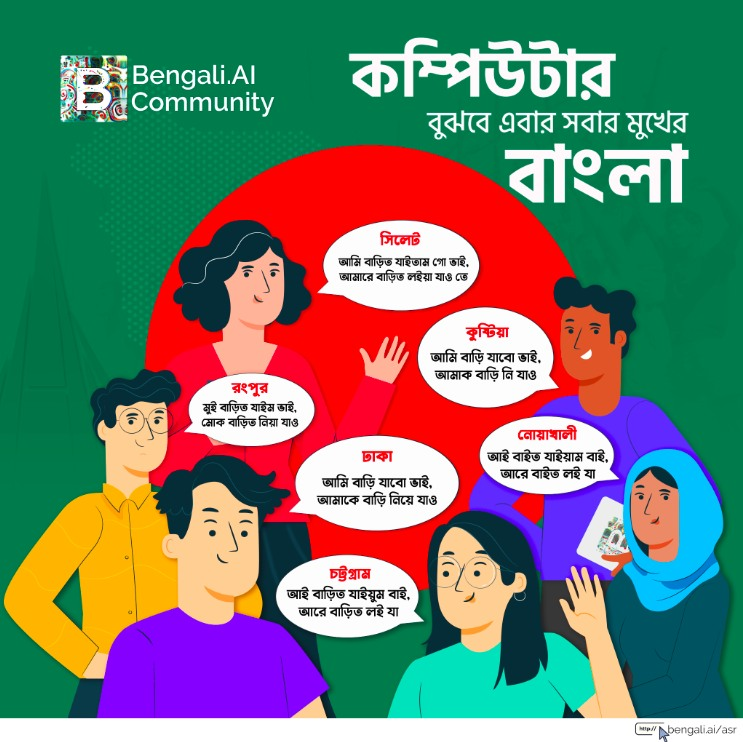
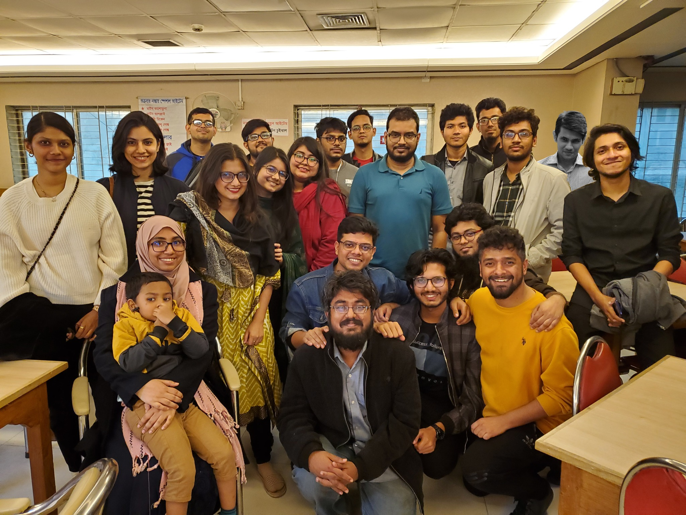
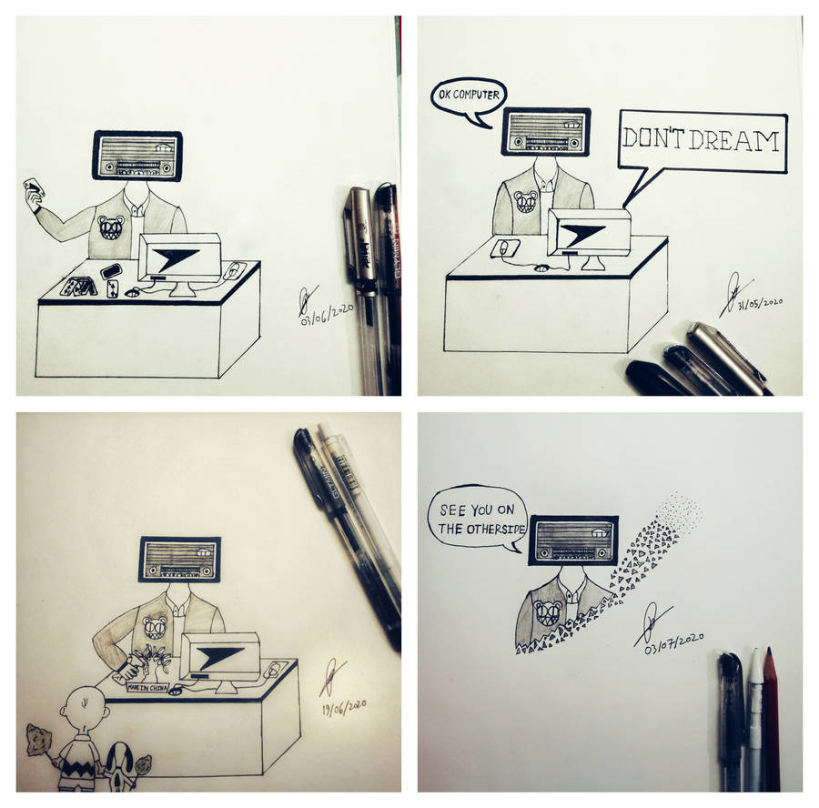
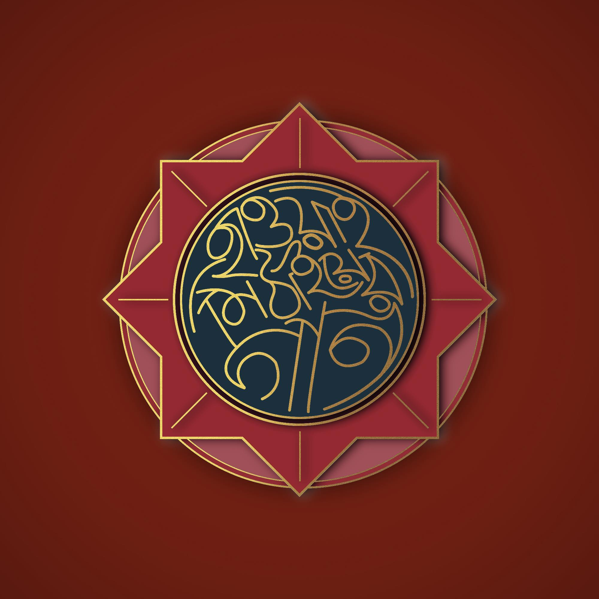

Volunteering
Volunteering and community service. Competition results and honours live on the Awards page; judging and peer review on the Adjudications page.
-
AI/ML Researcher & Assistant Co-ordinator
Bengali.AIOngoing
Founded in 2018, Bengali.AI develops open-source AI language tools and technologies for the Bengali language — both for everyday users and as resources for deep learning and linguistics researchers. It is a non-profit initiative working to close the gap in open-sourced datasets and tooling for Bengali computer vision, NLP, speech recognition and computational linguistics, with the ultimate aspiration of lifting Bengali out of the low-resource category. I work mostly on speech projects and audio data — for example Bengali speech-to-text with regional accents and dialects (which I currently lead), indigenous speech-text corpora, and speech-to-IPA transcription.




-
Blood Donor
Quantum FoundationFebruary 2021 – Present
I donate blood every four months. I've lost count of how many times — whether it came from a sudden phone call or a post that showed up on my Facebook feed.


-
Content Moderator & Musician
Hawai Mithaiyar GanJanuary 2019 – December 2020
Hawai Mithaiyar Gan is a duo of two multi-instrumentalists, Murshedul Arefin Riyad and Tasin Bin Noor, and also a platform for musicians from different genres to collaborate. I planned, created and moderated content for their YouTube channel and social platforms, and sometimes contributed to the music itself. — YouTube channel

